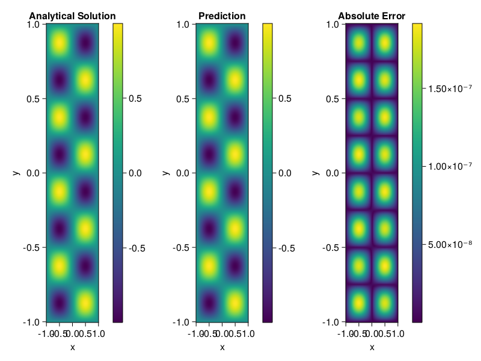

Helmholtz equation
Let us consider the Helmholtz equation in two space dimensions
\[\begin{aligned} &\Delta u(x, y)+k^{2} u(x, y)=q(x, y), \quad(x, y) \in \Omega:=(-1,1)^2 \\ &u(x, y)=0, \quad(x, y) \in \partial \Omega \end{aligned}\]
where
\[q(x, y)=-\left(a_{1} \pi\right)^{2} \sin \left(a_{1} \pi x\right) \sin \left(a_{2} \pi y\right)-\left(a_{2} \pi\right)^{2} \sin \left(a_{1} \pi x\right) \sin \left(a_{2} \pi y\right)+k^{2} \sin \left(a_{1} \pi x\right) \sin \left(a_{2} \pi y\right).\]
The excat solution is $u(x,y)=\sin{a_1\pi x}\sin{a_2\pi y}$. We chose $k=1, a_1 = 1$ and $a_2 = 4$.
using ModelingToolkit, IntervalSets, Sophon, Lux, CUDA
using Optimization, OptimizationOptimJL
@parameters x,y
@variables u(..)
Dxx = Differential(x)^2
Dyy = Differential(y)^2
a1 = 1
a2 = 4
k = 1
q(x,y) = -(a1*π)^2 * sin(a1*π*x) * sin(a2*π*y) - (a2*π)^2 * sin(a1*π*x) * sin(a2*π*y) + k^2 * sin(a1*π*x) * sin(a2*π*y)
eq = Dxx(u(x,y)) + Dyy(u(x,y)) + k^2 * u(x,y) ~ q(x,y)
domains = [x ∈ Interval(-1,1), y ∈ Interval(-1,1)]
bcs = [u(-1,y) ~ 0, u(1,y) ~ 0, u(x, -1) ~ 0, u(x, 1) ~ 0]
@named helmholtz = PDESystem(eq, bcs, domains, [x,y], [u(x,y)])\[ \begin{align} \frac{\mathrm{d}^{2}}{\mathrm{d}x^{2}} u\left( x, y \right) + \frac{\mathrm{d}^{2}}{\mathrm{d}y^{2}} u\left( x, y \right) + u\left( x, y \right) =& - 166.7832748185191 \sin\left( 3.141592653589793 x \right) \sin\left( 12.566370614359172 y \right) \end{align} \]
Note that the boundary conditions are compatible with periocity, which allows us to apply BACON.
chain = BACON(2, 1, 5, 2; hidden_dims = 32, num_layers=5)
pinn = PINN(chain) # call `gpu` on it if you want to use gpu
sampler = QuasiRandomSampler(300, 100)
strategy = NonAdaptiveTraining()
prob = Sophon.discretize(helmholtz, pinn, sampler, strategy)
@time res = Optimization.solve(prob, BFGS(); maxiters=1000)u: ComponentVector{Float64}(filters = (filter_1 = (bias = [0.18432108048715992; -0.9749296153602366; … ; -0.5204741422430545; -0.49121847360136073;;]), filter_2 = (bias = [0.8678726931021787; 0.6383052989368692; … ; 0.6001303517847602; -0.9164315259043402;;]), filter_3 = (bias = [-0.4166118019902835; -0.09298518118622369; … ; -0.23581307131905918; 0.2654498689678891;;]), filter_4 = (bias = [-0.42370721892709406; 1.0540264634243126; … ; -0.7608205280446206; 0.7247993070046838;;]), filter_5 = (bias = [-0.576494833085179; -0.07932672448288858; … ; -0.9623738321594931; -1.191837585068014;;])), linear_layers = (layer_1 = (weight = [-0.06377180387475391 0.17057383896114284 … -0.11177668862838647 -0.4378054491231005; 0.3757727691797144 0.07929312989818531 … -0.29597653329722146 -0.16738421145126336; … ; -0.3819350707863487 -0.35090838154301085 … 0.04958406238219243 0.1123298367911043; 0.27146058905169557 -0.10287297202928791 … 0.42783060647936094 0.07518991988690567], bias = [0.07041157161628933; 0.007707207982012394; … ; -0.003223795114958097; -0.0067884562005791306;;]), layer_2 = (weight = [-0.11413789580982642 0.21178338049532616 … 0.4227261941052272 -0.17209382827650166; 0.11275433037339969 0.346698202857479 … -0.2473764898488419 0.07856903250899432; … ; -0.08307262007405757 -0.21948133495856606 … -0.3955884752600945 -0.372374617026183; 0.19883854472819773 -0.341013289672445 … -0.29770314885207233 0.3796253292560303], bias = [-0.038769498621801526; -0.0028515069903016473; … ; 0.015388418743205812; 0.0029772687720505935;;]), layer_3 = (weight = [-0.11536587558475729 -0.35537509409945106 … -0.18364429533995955 0.05685051390645113; -0.013038973541603762 -0.327368546274667 … -0.21452941876076126 -0.1717534490749936; … ; 0.11624417452782605 0.3704845454770858 … -0.03997828189276031 -0.35680171641356245; -0.3237154859687535 -0.2959330005377708 … 0.02749487742679932 -0.13903421814457276], bias = [-0.02106347420623372; 0.019157034265452316; … ; 0.03594167395481201; -0.009262250069283834;;]), layer_4 = (weight = [-0.13026773767987582 0.36894990056166227 … -0.42767635909398144 -0.30820228287768847; 0.26106808576516216 -0.3499466394171551 … -0.20295804894587915 0.45508535953796186; … ; -0.21522374646542627 0.3832392733311936 … -0.139354933600997 0.20896499353874512; -0.22521751905226955 -0.04858038793553461 … 0.16914750826198136 -0.36170829147746597], bias = [0.012210822542003374; -0.01752700513356915; … ; -0.009519376373641912; -0.0031821149358355577;;])), output_layer = (weight = [0.5508144230849595 0.17164350505801734 … -0.053877383382803894 -0.13602725825029185], bias = [0.06426229494070816;;]))Let's plot the result.
phi = pinn.phi
xs, ys= [infimum(d.domain):0.01:supremum(d.domain) for d in domains]
u_analytic(x,y) = sinpi(a1*x)*sinpi(a2*y)
u_real = [u_analytic(x,y) for x in xs, y in ys]
phi_cpu = cpu(phi) # in case you are using GPU
ps_cpu = cpu(res.u)
u_pred = [sum(phi_cpu(([x,y]), ps_cpu)) for x in xs, y in ys]
using CairoMakie
axis = (xlabel="x", ylabel="y", title="Analytical Solution")
fig, ax1, hm1 = heatmap(xs, ys, u_real, axis=axis)
Colorbar(fig[:, end+1], hm1)
ax2, hm2= heatmap(fig[1, end+1], xs, ys, u_pred, axis= merge(axis, (;title = "Prediction")))
Colorbar(fig[:, end+1], hm2)
ax3, hm3 = heatmap(fig[1, end+1], xs, ys, abs.(u_pred-u_real), axis= merge(axis, (;title = "Absolute Error")))
Colorbar(fig[:, end+1], hm3)
fig